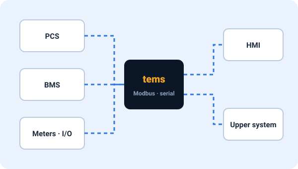
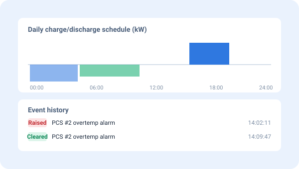
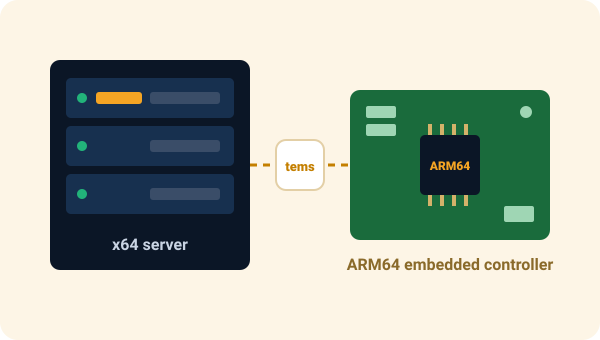

tems
An EMS server platform and a PCS controller engine.
It communicates with field devices to control equipment, and records events and history. Its modular design lets you pick only the functions you need, so it runs light on servers and embedded controllers alike.
Everything facility control needs, in one engine
Direct communication with field devices
Connects field devices such as PCS, BMS and meters point by point, and serves the data to upper-level systems as if it were a device itself.
- Modbus master / slave (TCP, serial)
- Device and point mapping managed in configuration files
- Controller I/O integration such as GPIO

Events · history · schedules
Records everything that happens in the facility, and operates according to a set timetable.
- Records when events and alarms occur and clear
- Operation history storage, fast loading into a time-series DB (PostgreSQL)
- Daily operation schedules · profiles
- Automatic cleanup · backup of old data

Modular process architecture
Each function runs as an independent process. Turn on only the functions a site needs; the design keeps a problem in one function from spreading to facility control as a whole.
- Independent configuration file per process · common configuration scheme
- Start · stop · restart per process
- NTP time synchronization keeps clocks aligned across sites
Different setups for each site, made easy
Combine app layers to suit each site, such as ESS, PV integration or PCS controllers.
From servers to embedded
The same engine runs on x64 Linux servers and ARM64 embedded controllers. PCS manufacturers can build tems into their own controllers as is.
- x64 Linux (Ubuntu) servers
- ARM64 embedded Linux controllers

Key specifications
| Product type | EMS server platform / PCS controller engine (software) |
|---|---|
| Runtime environment | x64 Linux servers, ARM64 embedded Linux |
| Device communication | Modbus master · slave (TCP, serial), GPIO |
| Data | Events · alarms, history, schedules, assets, time-series DB (PostgreSQL) loading |
| Architecture | Three-layer modular processes (base · core · app), configuration file per process |
| Operations | NTP time synchronization, data cleanup · backup, remote operations with tOps |
Detailed specifications and support for additional protocols are agreed according to site requirements.
On its own, or together with tOps
tems only
- When you already have your own operations system
- Controller engine built into a PCS manufacturer's product
- Focus on facility control and recording at the site
tems + tOps Recommended
- Monitor tems servers at many sites on one screen
- Edit tems settings remotely through a validated screen
- Process restarts, deployment and backup without site visits
Considering tems?
Tell us about your site setup and connected devices, and we will propose the right configuration. If you already use tems, check your tems configuration folder right away in the offline mode of the free tdoctor trial.